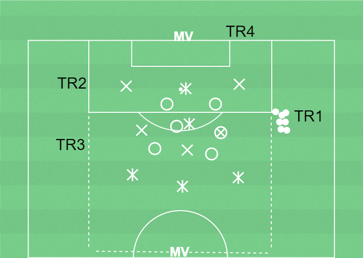

 ▶
▶
Speluppbyggnad
För att behålla bollen inom laget och ta sig förbi motståndarnas lagdelar med kontroll
Speluppbyggnad1) Spela genom motståndarnas lagdelar (speldjup framåt)2) Spela utanför motståndarnas lagdelar (spelbredd)3) Spela bakåt för att vända spelet (speldjup bakåt)
Förhindra speluppbyggnad1) Förhindra att motståndarna kan spel bollen genom och mellan lagdelarna2) Forward styr mot en sida av planen. Laget flyttar över mot bollsida 3) Pressa för att erövra bollen när laget är samlat
11-17 spelare, yta 27x17m, bollar, västar, koner.
3 lag har var sin boll och passar bollen inom respektive lag. En MV på varje kortsida. Uppgiften är att spela bollen inom laget från MV till MV. Alla spelare i laget måste ha bollen innan passing till MV. Integrera övningar för förberedelseträning i övnignen (en övning i taget).